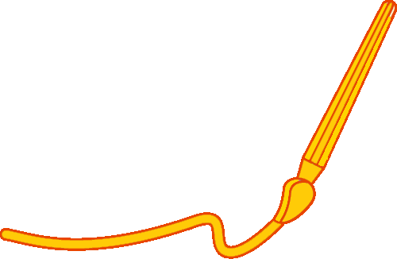

梦逐非遗韵，聚散绘星芒
心若怀热爱，行则路生光。第十五期行者无疆实践团的招新面试已然落下帷幕。在面试的现场，汇集了来自五湖四海的同学们。他们用诚挚的言语描绘着对非遗文化的憧憬与向往，以切实的行动彰显着文化行者的无畏魄力。每一段独具匠心的自我介绍，每一轮精彩绝伦的问答互动，皆如熠熠星辰，闪耀出众人身上独特的光芒。
面试篇

虽有擦肩之憾，却存同行之念
下面请欣赏大家的精彩表现吧！
点击图片查看下一张
为文化而奔走，我们的脚步从未停歇！行者无疆，思者无域。面试的终章奏响之后，行者无疆实践团正式集结，蓄势待发。十五位对非遗文化满怀热忱、愿为其披荆斩棘的行者，已整理行囊，剑指西安！
来源 | 行者无疆实践团
图片 | 樊星烁
文字 | 李凌志
编辑 | 杩健辉
审核 | 李凌志 杩健辉
责编 | 邹靓靓